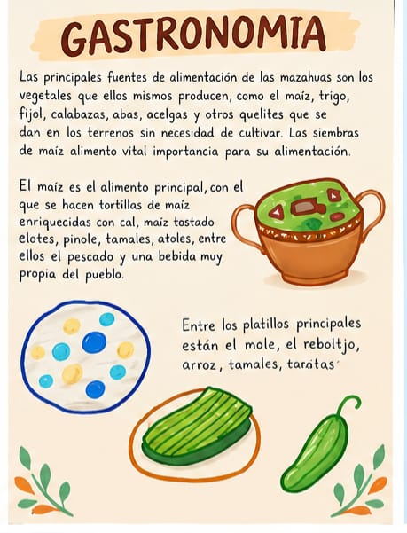

Platillos representativos
La cocina de Villa de Allende combina ingredientes de la región con recetas transmitidas de forma oral dentro de las familias.

- Barbacoa preparada en horno de tierra.
- Mixiotes y guisos con hierbas de la región.
- Pan casero y dulces tradicionales de temporada.
- Bebidas típicas como el atole y el pulque.
Dónde probarla
Durante la feria de la barbacoa y en los mercados municipales es posible encontrar puestos con estos platillos, preparados por cocineras y comerciantes locales.